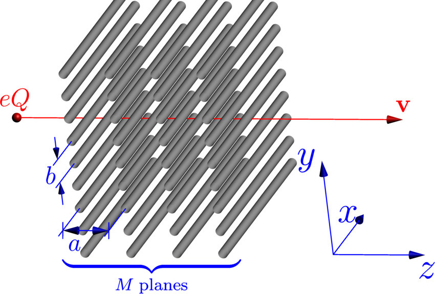

Вторая страница домашнего задания
Первый элемент <div> с произвольным текстом
Электромагнитные процессы, возбуждаемые в кристаллах
частицами высоких энергий, являются предметом интенсивных исследований
уже не один десяток лет. Несмотря на это, интерес к данным явлениям не снижается.
Во многих, ведущих в области ядерной физики, лабораториях мира
создаются мощные ускорительные комплексы,
предназначенные для исследований электромагнитного излучения, возникающего при
взаимодействии релятивистских пучков заряженных частиц
с различными мишенями, в том числе с
кристаллами и искусственными пространственно-периодическими
структурами.
Это, например, ускоритель ЛИНАК-800 в России, JLab ERL в США, KEK cERL в Японии
и многие другие. Планируется создание на основе этих комплексов
источников излучения в широком спектральном диапазоне,
от микроволнового и терагерцового до оптического и рентгеновского.
Генерируемое излучение может использоваться как в исключительно исследовательских
целях, так и для нужд народного хозяйства: в медицине, в системах безопасности,
для контроля качества продукции и так далее.
Таким образом, исследование процессов генерации фотонов
релятивистскими заряженными частицами в пространственно-периодических
средах продолжает оставаться чрезвычайно актуальным.
Второй элемент <div> с произвольным текстом
В настоящее время известно несколько типов
излучения, образуемого частицей, движущейся в кристалле с постоянной скоростью:
резонансное или дифракционное излучение,
эффект Вавилова-Черенкова,
параметрическое рентгеновское излучение,
переходное излучение.
Всех их объединяет единый микроскопический механизм:
под влиянием электромагнитного поля движущейся частицы
поляризуются и начинают излучать атомы (ядра) среды.
Черенковское и переходное излучение были открыты ещё в 30--40 гг.
прошлого века и широко используются сейчас
на практике: в детекторах элементарных частиц, генераторах и усилителях
излучения и т.д.
Дифракционное и параметрическое излучение интенсивно исследуются
теоретически и экспериментально
в настоящее время.
Стимулом к таким работам также служат многочисленные возможности практического применения,
в частности, возможность
создания компактных перестраиваемых источников монохроматического
рентгеновского излучения,
а также диагностики пучков релятивистских заряженных частиц.
Подраздел с картинкой

Геометрия решаемой задачи. © Евгений Гурневич 2020